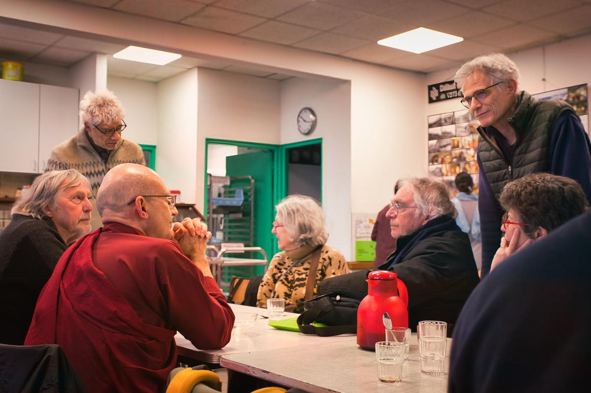
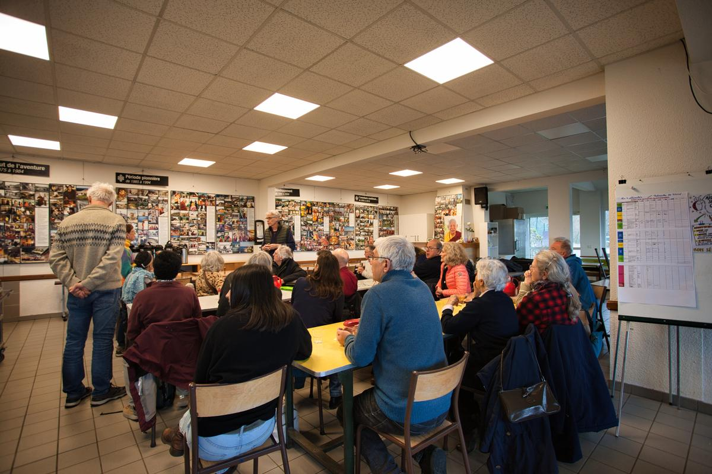

Drukpa Grenoble participe activement aux rencontres interreligieuses, en particulier au Centre Théologique de Meylan-Grenoble et à des événements œcuméniques régionaux.
En mars 2026, notre association était présente à la rencontre œcuménique de Montchardon, aux côtés de pratiquants catholiques, protestants, juifs et musulmans — dans l'esprit de compréhension mutuelle cher à Lopön Thrinlé.
Cette ouverture au dialogue fait partie intégrante de notre tradition bouddhiste tibétaine, qui reconnaît la valeur de tous les chemins spirituels authentiques.
Meylan-Grenoble — colloques réguliers avec toutes les traditions
Voyage interreligieux — rencontres au Vatican et avec d'autres traditions
Rencontre œcuménique — catholiques, protestants, juifs, musulmans, bouddhistes